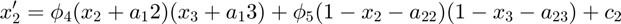
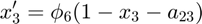

otvlTens
OTVL tensor
Contents
Syntax
sys = otvlTens(FPhi, Fa, Fc, varargin)
Description
Use sys = otvlTens(FPhi, Fa, Fc, varargin) to create an OTVL tensor.
An OTVL tensor contains multiple OTVLs, which represent the structure of state equations of a multilinear model.
Input arguments
FPhi parameter of dimension total number of OTVL rows x 1
Fa parameter of dimension 2 x number of variables
Fc parameter of dimension number of Variables x 1
varargin input of variable length containing an otvl-object for each state equation of the multilinear model
Outut arguments
sys OTVL tensor containing state equations of MTI model
Multilinear models and OTVL
OTVL impose structural restrictions on the contained multilinear equations, since they only allow certain multilinear combinations, see also [1]. The state equations of a multilinear model whose equation structure is contained in the OTVL:
| x1 | x2 | x3 |
|---|---|---|
| 1 | 1 | 0 |
| 1 | - | 1 |
| 0 | 0 | 0 |
| x1 | x2 | x3 |
|---|---|---|
| - | 1 | 1 |
| - | 0 | 0 |
| x1 | x2 | x3 |
|---|---|---|
| - | - | 0 |
are represented by



The dimensions of the parameters are
Fphi: total number of TVL rows x 1
Fa: 2 x number of Variables
Fc: number of Variables x 1
Example create OTVL tensor
An OTVL tensor contains equation structure and parameters of a multilinear model. It is created by using the constructor method of the class otvlTens.
%create TVL structures for state equations myTvlStruct1= false(3,3,2); myTvlStruct1(:,:,1) = [0 0 0; 0 1 0; 0 0 0]; %position of dont cares myTvlStruct1(:,:,2) = [1 1 0; 1 0 1; 0 0 0]; %Boolean values myTvlStruct2= false(2,3,2); myTvlStruct2(:,:,1) = [1 0 0; 1 0 0]; %position of dont cares myTvlStruct2(:,:,2) = [0 1 1;0 0 0]; %Boolean values myTvlStruct3= false(1,3,2); myTvlStruct3(:,:,1) = [1 1 0]; %position of dont cares myTvlStruct3(:,:,2) = [0 0 0]; %Boolean values %create OTVLs myOTvl1 = otvl(myTvlStruct1); myOTvl2 = otvl(myTvlStruct2); myOTvl3 = otvl(myTvlStruct3); %create OTVL tensor myC = zeros(3,1); myPhi = ones(6,1); myA = zeros(2,3); oTens = otvlTens(myPhi, myA, myC, myOTvl1, myOTvl2, myOTvl3);
References
[1] M. Engels, G. Lichtenberg, and S. Knorn. "An approach to structured multilinear modeling with relaxed Boolean output functions", in 22nd IFAC World Congress, Yokohama, Japan, 2023, pp.7920-7925